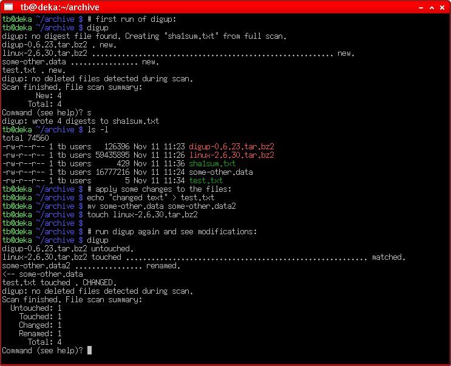

digup - A Digest Updating Tool
Posted on 2009-11-10, last updated 2011-01-30 by Timo Bingmann at Permlink.
Description
digup is a console tool to update md5sum or shasum digest files. It will read existing digest files, check the current directory for new, updated, modified, renamed or deleted files and query the user with a summary of changes. After reviewing the updates, they can be written back to the digest file.
One of the envisioned applications of digup is to update and verify incremental archives like chronological data storages or music collections. By using digup possibly undesired changes or lost files can easily be detected while quickly adding new files.
Another purpose could be to automatically verify the integrity of hard disk copies of archives, as backups to hard disks are becoming increasingly popular. Using a full file digest scan even slowly creeping bad blocks on old hard disks can be detected. By using a crontab entry, this check can be performed unattended and routinely.
In normal operation only touched files with newer modification times are fully read and their digest compared. Optionally a full scan can be performed to test all file contents against their expected digests.
Symbolic links are supported by either following the link and reading the target's digest or by saving only the link target path and verifying it against the old one.
The digest files written by digup are compatible with those generated and read by md5sum and similar programs from the coreutils package. Additional information like file size and modification time or symlink targets are stored on comment lines.
Four digest algorithms are supported: MD5, SHA1, SHA256 and SHA512. The digest file itself is also checksummed using CRC32 against unintentional changes. A fast red-black binary tree is used for the internal file list, allowing fast operation on a large number of files.
Alternatives
digup is targeted at simple digest updating and verification without filtering capabilities or configuration files. For more complex applications like host-based intrusion detection, refer to tools like Tripwire (commercial), AIDE (open-source) or debsums for Debian/Linux.
Downloads
| digup 0.6.40 (current) released 2011-01-30 | |||||||||||||||
| Binaries: |
| ||||||||||||||
| |||||||||||||||
| Currently no pre-compiled binaries are available for further systems. However, the source code below was successfully compiled on FreeBSD, OpenBSD and MacOSX. | |||||||||||||||
| Source code: | Download digup-0.6.40.tar.bz2 The source code is released under the GNU General Public License v2 (GPL). Some parts of the source tarball are copyrighted by different authors. All sources and packages are available in the git repository via | ||||||||||||||


See bottom of this page for older downloads.
Documentation
Please refer to the manpage of digup(1): also available online in HTML and PDF formats.
Screenshots

ChangeLog
- src/digup.c: Adding shortcut option -w, --windows for --modify-window=1 as needed to check files on FAT filesystems.
- src/digup.c: New feature: --restrict=substring to temporarily ignore all files not matching the substring. Required a new fileinfo state FS_SKIPPED and appropriate commands.
- src/digup.c: Fixing problems with 64-bit file sizes on win32 under (mingw32): using _stat64 on mingw now.
- src/digup.c: Simple variable rename node -> digestiter for clarity.
- src/digup.c: Adding check in digest_file to verify that the complete file was read.
- src/digup.c: Using intptr_t in rbtree tests to fix warnings about pointer conversion on 64-bit systems.
- src/digup.c: Adding new flags --modify-window inspired by rsync: allow modification time deltas larger than zero e.g. for backuping on FAT filesystems.
- src/digup.c: Adding new option --exclude-marker=file. If file is found in a directory during the recursive scan, the directory itself and all subdirectories are skipped.
- src/digup.c: Applying contributed patch which fixes segfault on amd64 due to va_start(), va_end() use pattern.
- src/digup.c: Fixed string allocation bug causing a segfault when using -t followed by -f parameters.
- src/digup.c: Changing size variable from ssize_t to long long to enable support for large files.
- Initial release of 0.6.23
Older Downloads
| digup 0.6.30 released 2010-10-03 | ||
| Source code: | digup-0.6.30.tar.bz2 | |
| digup 0.6.27 released 2010-08-20 | ||
| Source code: | digup-0.6.27.tar.bz2 | |
| digup 0.6.23 released 2009-11-10 | ||
| Source code: | digup-0.6.23.tar.bz2 | |